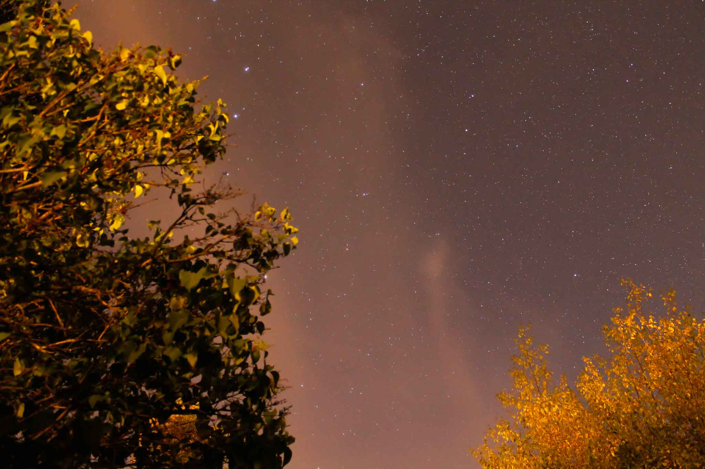

Kontakt
Kategorien
Start
Kontakt
Kategorien
Start
Fängst Du gerade an mit der Astrofotografie, dann wird Deine aktuelle Ausrüstung vermutlich ausreichen, um erste Bilder des Nachthimmels zu erstellen.
Aber schon bald wirdst Du Dich sicherlich nach weiterem Zubehör sehnen.
Denn das aller wichtigste um Sterne-fotografieren zu können, ist möglichst viel Licht einzufangen.
Sterne leuchten nunmal nicht gerade hell (zumindest von der Erde aus betrachtet).
Der trick dabei ist es, möglichst lange zu belichten und dabei eine möglichst große Blendenöffnung zu haben.
Dabei kommt man schnell auf die Idee, einfach mehrere Minuten den Nachthimmel zu belichten um genung Licht einzufangen, aber da macht die Natur nicht mit.
Denn wie wir alle wissen, dreht sich die Erde nunmal, und aufgrund dessen verändert sich die Position der Sterne am Nachthimmel recht schnell.
Benutzt Du ein Weitwinkel Objektiv, mit ca. 14-18mm Brennweite, solltest Du keinesfalls länger als 30s belichten.
Es sei denn Du möchtest sogenannte Star-trail bilder schießen, bei denen man die sich rotierende Erde ausnutzt um Bilder wie dieses zu schießen:
Ist das alllerdings nicht Deine Intention, wirst Du darauf achten müssen, nicht zu lange zu belichten.
Dabei ist zu beachten, je weitwinkliger Dein Objektiv ist, desto länger kannst Du belichten ohne Star-trails zu erzeugen.
Es gibt allerding auch spezielle Montierungen, zwischen Stativ und Kamera, welche die Rotation der Erde durch bewegung korrigieren können.
Hier wird es allerdings sehr teuer, weshalb Du Dich am Anfang erstmal mit einem normale Stativ versuchen solltest, denn auch damit lassen sich großartige Bilder schießen.

Was Du ansonsten unbedingt beachten solltest, ist an einem Ort zu fotogrfieren, an dem es möglichst wenig Umgebungslicht gibt.
Also wenn möglich, dann gehe raus aufs Feld, so weit wie es geht von störenden Lichtquellen und der sogenannten Lichtverschmutzung großer Städte.
Ansonsten kann ich Dir nur noch viel Spaß wünschen, beim bestaunen unseres Nachthimmels.
Es wird mit sicherheit niemals langweilig.